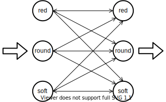
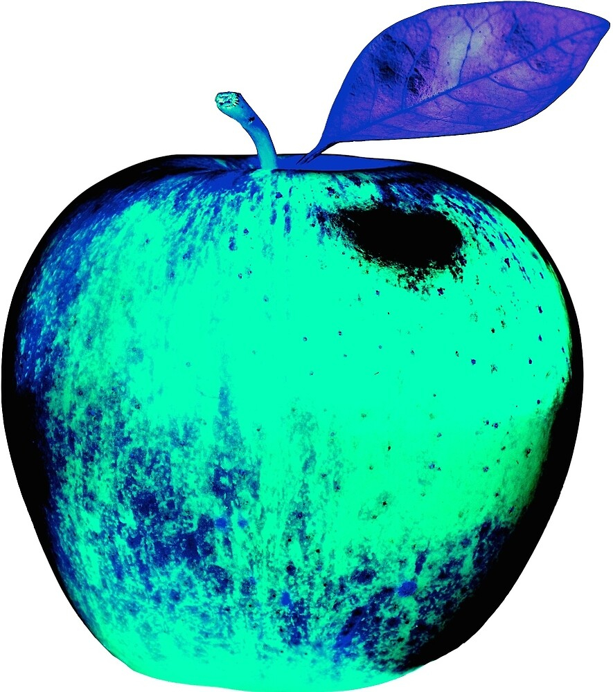
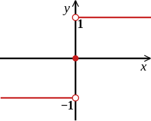
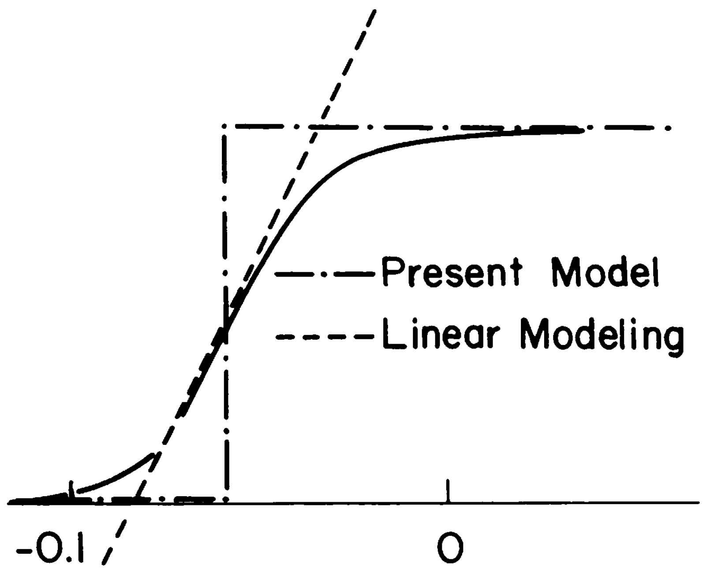

$\vec{apple}=\begin{bmatrix} 1\\ 1\\ -1\end{bmatrix}$
$=\begin{bmatrix} \text{red}\\ \text{round} \\ \text{soft}\end{bmatrix}$
$\vec{apple}=\begin{bmatrix} 1\\ 1\\ -1\end{bmatrix}$
$\longmapsto \vec{apple} = \begin{bmatrix} 1\\ 1\\ -1\end{bmatrix}$
$\vec{apple}_{bitten}=\begin{bmatrix} 0.95\\ 0.8\\ -1\end{bmatrix}$
$\longmapsto \vec{apple} = \begin{bmatrix} 1\\ 1\\ -1\end{bmatrix}$
$\vec{apple} + \vec{bite}=\begin{bmatrix} 1\\ 1\\ -1\end{bmatrix} + \begin{bmatrix} -0.05\\ -0.2\\ 0\end{bmatrix}$
$\longmapsto \vec{apple} = \begin{bmatrix} 1\\ 1\\ -1\end{bmatrix}$
$f: \mathbb{X} \mapsto \mathbb{X}$
$f(\vec{x}) = \vec{x}$
$f(\vec{x} + \vec{\epsilon}) = \vec{x}$
associative
auto
memory
And it's content-addressable!
$\vec{x} \longmapsto$
$f(\vec{x})$
$f(\vec{x})$
$=\mathbf{W} \vec{x}$
$=\begin{bmatrix} *&*&*\\ *&*&*\\ *&*&*\end{bmatrix} \begin{bmatrix} 1\\ 1\\ -1 \end{bmatrix}$
$f(\vec{x})$
$=\mathbf{W} \vec{x}$
$\begin{aligned} \vec{x}_1 &= \mathbf{W} \vec{x}_0 \\ \vec{x}_2 &= \mathbf{W} \mathbf{W} \vec{x}_0 \\ \vec{x}_3 &= \mathbf{W} \mathbf{W} \mathbf{W} \vec{x}_0 \\ &\cdots \end{aligned}$
Suppose we have: $$\mathbf{W}\vec{round} = 1 \cdot \vec{round}$$
$\begin{bmatrix} 0\\ 1\\ 0 \end{bmatrix}$
$\begin{bmatrix} 0\\ 1\\ 0 \end{bmatrix}$
$\begin{bmatrix} 0\\ 1\\ 0 \end{bmatrix}$
$\begin{bmatrix} 0\\ 1\\ 0 \end{bmatrix}$
$$\begin{aligned} \vec{x}_t &= \vec{round} \\ \vec{x}_{t+1} &= \mathbf{W} \vec{round} = \vec{round} \\ \vec{x}_{t+2} &= \mathbf{W} \mathbf{W} \vec{round} = \vec{round} \\ &\cdots \end{aligned}$$
Suppose we have: $$\mathbf{W}\vec{red} = 3 \cdot \vec{red}$$
$\begin{bmatrix} 1\\ 0\\ 0 \end{bmatrix}$
$\begin{bmatrix} 3\\ 0\\ 0 \end{bmatrix}$
$\begin{bmatrix} 1\\ 0\\ 0 \end{bmatrix}$
$\begin{bmatrix} 3\\ 0\\ 0 \end{bmatrix}$
$$\begin{aligned} \vec{x}_t &= \vec{red} \\ \vec{x}_{t+1} &= \mathbf{W} \vec{red} = 3 \cdot \vec{red} \\ \vec{x}_{t+2} &= \mathbf{W} \mathbf{W} \vec{red} = 9 \cdot \vec{red} \\ &\cdots \end{aligned}$$
Suppose we have: $$\begin{aligned}\mathbf{W}\vec{red} &= 3 \cdot \vec{red}\\ \mathbf{W}\vec{round} &= 1 \cdot \vec{round}\\ \mathbf{W}\vec{soft} &= 1.5 \cdot \vec{soft}\end{aligned}$$
$a\begin{bmatrix} 1\\ 0\\ 0 \end{bmatrix} + b\begin{bmatrix} 0\\ 1\\ 0 \end{bmatrix} + c\begin{bmatrix} 0\\ 0\\ 1 \end{bmatrix}$
$3a\begin{bmatrix} 1\\ 0\\ 0 \end{bmatrix} + 1b\begin{bmatrix} 0\\ 1\\ 0 \end{bmatrix} + 1.5c\begin{bmatrix} 0\\ 0\\ 1 \end{bmatrix}$
For example: $$\mathbf{W}\vec{apple} = \mathbf{W}(1\cdot\begin{bmatrix}1\\0\\0\end{bmatrix} + 1\cdot\begin{bmatrix}0\\1\\0\end{bmatrix} + (-1)\cdot\begin{bmatrix}0\\0\\1\end{bmatrix}) = \begin{bmatrix}3\\1\\-1.5\end{bmatrix}$$
$a\begin{bmatrix} 1\\ 0\\ 0 \end{bmatrix} + b\begin{bmatrix} 0\\ 1\\ 0 \end{bmatrix} + c\begin{bmatrix} 0\\ 0\\ 1 \end{bmatrix}$
$3a\begin{bmatrix} 1\\ 0\\ 0 \end{bmatrix} + 1b\begin{bmatrix} 0\\ 1\\ 0 \end{bmatrix} + 1.5c\begin{bmatrix} 0\\ 0\\ 1 \end{bmatrix}$
$a\begin{bmatrix} 1\\ 0\\ 0 \end{bmatrix} + b\begin{bmatrix} 0\\ 1\\ 0 \end{bmatrix} + c\begin{bmatrix} 0\\ 0\\ 1 \end{bmatrix}$
$3a\begin{bmatrix} 1\\ 0\\ 0 \end{bmatrix} + 1b\begin{bmatrix} 0\\ 1\\ 0 \end{bmatrix} + 1.5c\begin{bmatrix} 0\\ 0\\ 1 \end{bmatrix}$
$\begin{aligned}\vec{x}_0 &= a\cdot\vec{red} + b\cdot\vec{round} + c\cdot\vec{soft}\\ \vec{x}_1 = \mathbf{W}\vec{x}_0 &= 3a\cdot\vec{red} + 1b\cdot\vec{round} + 1.5c\cdot\vec{soft}\\ \vec{x}_2 = \mathbf{W}\mathbf{W}\vec{x}_0 &= 3^2a\cdot\vec{red} + 1^2b\cdot\vec{round} + 1.5^2c\cdot\vec{soft}\\\cdots&\cdots\\ \vec{x}_{1000} = \mathbf{W}\cdots\mathbf{W}\vec{x}_0 &= 3^{1000}a\cdot\vec{red} + 1^{1000}b\cdot\vec{round} + 1.5^{1000}c\cdot\vec{soft}\\&\approx 3^{1000}a\cdot\vec{red}\end{aligned}$
Everything is
$\begin{bmatrix}\text{red}\\ 0\\ 0\end{bmatrix}$
Now what if we have: $$\begin{aligned}\mathbf{W}\vec{apple} &= 3 \cdot \vec{apple}\\ \mathbf{W}\vec{elmo} &= 1 \cdot \vec{elmo}\\ \mathbf{W}\vec{yolk} &= 1.5 \cdot \vec{yolk}\end{aligned}$$
Thank you Lingxuan and Lucia!
$a\begin{bmatrix} 1\\ 1\\ -1 \end{bmatrix} + b\begin{bmatrix} 1\\ -1\\ 1 \end{bmatrix} + c\begin{bmatrix} -1\\ 1\\ 1 \end{bmatrix}$
$3a\begin{bmatrix} 1\\ 1\\ -1 \end{bmatrix} + 1b\begin{bmatrix} 1\\ -1\\ 1 \end{bmatrix} + 1.5c\begin{bmatrix} -1\\ 1\\ 1 \end{bmatrix}$
$a\begin{bmatrix} 1\\ 1\\ -1 \end{bmatrix} + b\begin{bmatrix} 1\\ -1\\ 1 \end{bmatrix} + c\begin{bmatrix} -1\\ 1\\ 1 \end{bmatrix}$
$3a\begin{bmatrix} 1\\ 1\\ -1 \end{bmatrix} + 1b\begin{bmatrix} 1\\ -1\\ 1 \end{bmatrix} + 1.5c\begin{bmatrix} -1\\ 1\\ 1 \end{bmatrix}$
$\begin{aligned}\vec{x}_0 &= a\cdot\vec{apple} + b\cdot\vec{elmo} + c\cdot\vec{yolk}\\ \vec{x}_1 &= 3a\cdot\vec{apple} + 1b\cdot\vec{elmo} + 1.5c\cdot\vec{yolk}\\ \vec{x}_2 &= 3^2a\cdot\vec{apple} + 1^2b\cdot\vec{elmo} + 1.5^2c\cdot\vec{yolk}\\\cdots&\cdots\\ \vec{x}_{1000} &= 3^{1000}a\cdot\vec{apple} + 1^{1000}b\cdot\vec{elmo} + 1.5^{1000}c\cdot\vec{yolk}\\&\approx 3^{1000}a\cdot\vec{apple}\end{aligned}$
Everything is $\vec{apple}$
Except $\vec{elmo}$ and $\vec{yolk}$
$a\cdot\vec{apple} + b\cdot\vec{elmo} + c\cdot\vec{yolk}$
$3a\cdot\vec{apple} + 1b\cdot\vec{elmo} + 1.5c\cdot\vec{yolk}$
We want: $$\begin{aligned} \vec{apple} &\mapsto \vec{apple}\\ \vec{apple}_{bitten} &\mapsto \vec{apple} \end{aligned}$$ Not $3\cdot\vec{apple}$!!
$\begin{aligned} sign(\mathbf{W}\vec{apple}) &= sign(3\cdot\vec{apple})\\ &=sign(\begin{bmatrix}3\\3\\-3\end{bmatrix}) =\begin{bmatrix}1\\1\\-1\end{bmatrix}\\ &=\vec{apple}\end{aligned}$
$\begin{aligned} \vec{apple}_{bitten} &= \begin{bmatrix}0.95\\0.8\\-1\end{bmatrix}\\ &= 0.875 \begin{bmatrix}1\\1\\-1\end{bmatrix} + (-0.025) \begin{bmatrix}1\\-1\\1\end{bmatrix} + (-0.1) \begin{bmatrix}-1\\1\\1\end{bmatrix}\\ &= 0.875\cdot\vec{apple} + (-0.025)\cdot\vec{elmo} + (-0.1)\cdot\vec{yolk} \end{aligned}$
$\vec{apple}_{bitten} = 0.875\cdot\vec{apple} + (-0.025)\cdot\vec{elmo} + (-0.1)\cdot\vec{yolk}$
$\begin{aligned} \mathbf{W}\vec{apple}_{bitten}&=3\cdot0.875\cdot\vec{apple} +1\cdot(-0.025)\cdot\vec{elmo}+1.5\cdot(-0.1)\cdot\vec{yolk}\\ &=2.625\begin{bmatrix}1\\1\\-1\end{bmatrix} +(-0.025)\begin{bmatrix}1\\-1\\1\end{bmatrix} +(-0.15)\begin{bmatrix}-1\\1\\1\end{bmatrix}\\ &=\begin{bmatrix}2.75\\2.5\\-2.8\end{bmatrix} \end{aligned}$
$\vec{apple}_{bitten} = 0.875\cdot\vec{apple} + (-0.025)\cdot\vec{elmo} + (-0.1)\cdot\vec{yolk}$
$\mathbf{W}\vec{apple}_{bitten}= \begin{bmatrix}2.75\\2.5\\-2.8\end{bmatrix}$
$\begin{aligned} sign(\mathbf{W}\vec{apple}_{bitten})&=sign( \begin{bmatrix}2.75\\2.5\\-2.8\end{bmatrix})\\ &=\begin{bmatrix}1\\1\\-1\end{bmatrix}\\ &=\vec{apple} \end{aligned}$
$\vec{elmo}_{dirty} = \begin{bmatrix}0.8\\-1\\1\end{bmatrix} =(-0.1)\cdot\vec{apple} + (0.9)\cdot\vec{elmo} + (0)\cdot\vec{yolk}$
$\mathbf{W}\vec{elmo}_{dirty} = (-0.3)\cdot\vec{apple} + (0.9)\cdot\vec{elmo} + (0)\cdot\vec{yolk} =\begin{bmatrix}0.6\\-1.2\\1.2\end{bmatrix}$
$sign(\mathbf{W}\vec{elmo}_{dirty}) =\begin{bmatrix}1\\-1\\1\end{bmatrix} =\vec{elmo}$
$\mathbf{W}\vec{elmo}_{dirty} = (-0.3)\cdot\vec{apple} + (0.9)\cdot\vec{elmo} + (0)\cdot\vec{yolk} =\begin{bmatrix}0.6\\-1.2\\1.2\end{bmatrix}$
Had we kept going without taking the $sign$...
$\begin{aligned} \mathbf{W}\mathbf{W}\vec{elmo}_{dirty} &= (-0.9)\cdot\vec{apple} + (0.9)\cdot\vec{elmo} + (0)\cdot\vec{yolk}\\ \mathbf{W}\mathbf{W}\mathbf{W}\vec{elmo}_{dirty} &= (-2.7)\cdot\vec{apple} + (0.9)\cdot\vec{elmo} +(0)\cdot\vec{yolk}\\ \cdots&\cdots \end{aligned}$
hard snap
soft bound
We have effectively created: $$\begin{aligned} \mathbf{W}\vec{apple} &\mapsto 1\cdot\vec{apple}\\ \mathbf{W}\vec{elmo} &\mapsto 1\cdot\vec{elmo}\\ \mathbf{W}\vec{yolk} &\mapsto 1\cdot\vec{yolk} \end{aligned}$$
$\vec{x}_{t+1} = sign(\mathbf{W}\vec{x}_t) \quad\text{where}\quad \mathbf{W} = \begin{bmatrix} 0 & * & * \\ * & 0 & * \\ * & * & 0 \end{bmatrix} $
$\vec{x}_t = \begin{bmatrix}1\\1\\1\end{bmatrix} \quad \mathbf{W}\vec{x}_t = \begin{bmatrix}0.8\\1.2\\2.2\end{bmatrix}$
The network converges\ when the current state:\ $\vec{x}_t$\ and the "pre-synaptic" input\ for the next state:\ $\mathbf{W}\vec{x}_t$\ **agree**!
$\vec{x}_t = \begin{bmatrix}1\\1\\1\end{bmatrix} \quad \mathbf{W}\vec{x}_t = \begin{bmatrix}0.8\\1.2\\2.2\end{bmatrix}$
$\vec{x}_t^\intercal\mathbf{W}\vec{x}_t = 4.2 \quad \text{agree!}$
$\vec{x}_t = \begin{bmatrix}1\\-1\\1\end{bmatrix} \quad \mathbf{W}\vec{x}_t = \begin{bmatrix}0.8\\1.2\\-2.2\end{bmatrix}$
$\vec{x}_t^\intercal\mathbf{W}\vec{x}_t = -2.6 \quad \text{disagree!}$
$E(\vec{x}_t) = -\frac{1}{2}\vec{x}_t^\intercal\mathbf{W}\vec{x}_t$
definded for each state
$\vec{x}_{t+1} = sign(\mathbf{W}\vec{x}_t)$
$\begin{aligned} \vec{x}_t &= \begin{bmatrix}1\\1\\1\end{bmatrix} \; &\mathbf{W}\vec{x}_t &= \begin{bmatrix}0.8\\1.2\\2.2\end{bmatrix} \; &E&=-\frac{1}{2}\cdot4.2\\ \vec{x}_t &= \begin{bmatrix}1\\-1\\1\end{bmatrix} \; &\mathbf{W}\vec{x}_t &= \begin{bmatrix}0.8\\1.2\\-2.2\end{bmatrix} \; &E&=-\frac{1}{2}\cdot(-2.6) \end{aligned}$
Keep the _round_ neuron at $1$!